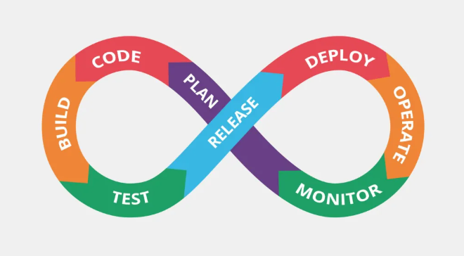

Software Development Life Cycle (SDLC)
Meet Your Hosts
- Marek Jagielski - DevOps Manager
- Piotr Kucia - Senior Principal DevOps Engineer
- Maksymilian Baran - Senior Principal DevOps Engineer
- Kacper Derlatka - DevOps Engineer
- Barbara Komorniczak - DevOps Engineer
- Piotr Januszek - DevSecOps Engineer
Objectives
- Provide a high-level overview of typical CI/CD components
- Equip participants with practical skills to develop and deploy their own projects
Plan
| 10 min | SDLC |
| 10 min | GitHub Repository and Environment Setup |
| 1h30 | Implementing CI/CD with GitHub Actions |
| 30 min | Deployment |
| 10 min. | Summary & Closing Remarks |
SDLC
Git flow

Source: https://nvie.com/posts/a-successful-git-branching-model/
Pipelines - Github actions

Static code analyses

Test coverage
Static Application Security Testing (SAST)
| Feasture | Static Code Analysis | SAST |
| Focus | Code quality & maintainability | Security vulnerabilities |
| Checks for | Bugs, duplication style issues | Security vulnerabilities like SQL injection |
| When to use | During development | Security audits, CI/CD |
| Tools | SonarQube, ESLint | Checkmarx, Fortify, Veracode |